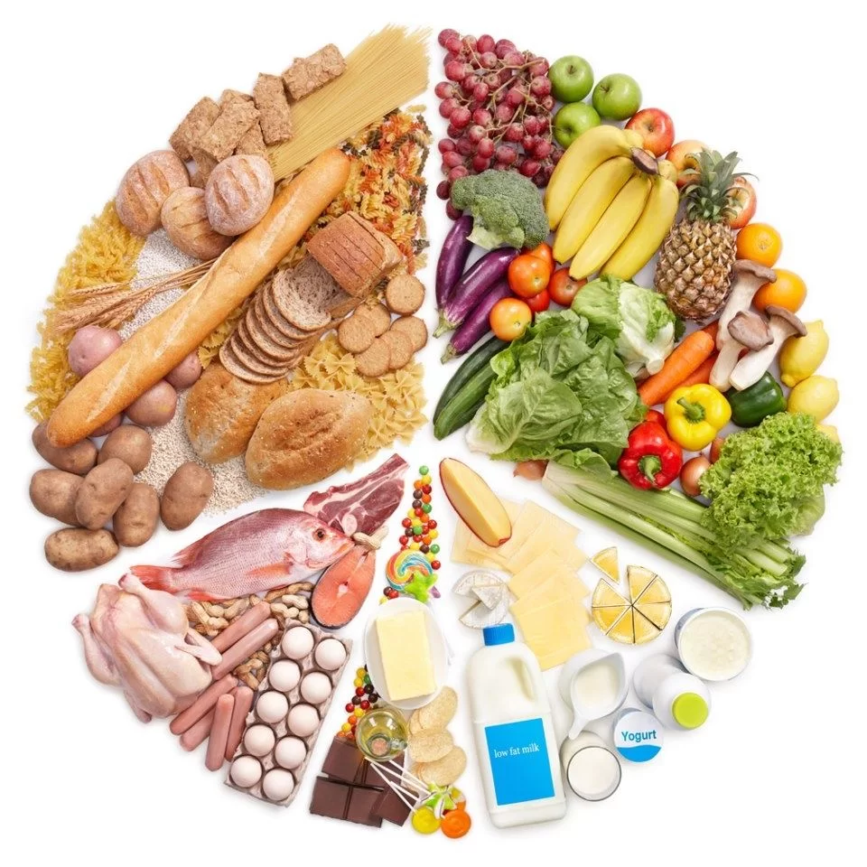

ALIMENTAÇÃO BALANCEADA
Praticamente todo mundo já entrou em alguma dieta radical que prometia reduzir o peso de forma drástica.
Da mesma forma, todos já deslizamos e comemos mal por um tempo. Ainda que esse tipo de coisa seja inevitável às vezes, essa não é a forma mais recomendada de se alimentar,
nem o excesso e muito menos a falta. O que é realmente importante e que deve ser colocado em prática sempre é a alimentação balanceada.
Com ela, o corpo recebe todos os nutrientes que precisa, ao mesmo tempo em que o peso e a saúde são mantidos, sempre de uma maneira saudável. Por outro lado, apesar do
tanto que ouvimos a respeito de alimentação balanceada, você já parou para pensar no que isso significa?
E, mais importante, sabe como ter uma alimentação balanceada?

O que é alimentação balanceada e por que é importante ter uma?
Alimentação balanceada é a alimentação que entrega ao corpo todos os tipos de nutrientes que ele precisa para se manter ativo e saudável. Se você comer um prato que tenha
apenas salada, você até pode ter a impressão de que está comendo bem; porém, na verdade, não está.
Isso porque os vegetais contêm apenas vitaminas, minerais e fibras. Esses nutrientes são, sem sombra de dúvidas, muito importantes, mas muitos outros também devem ser
ingeridos diariamente para que você tenha uma alimentação balanceada e corpo e mente saudáveis. Os nutrientes que devem ser ingeridos diariamente por todos são:
Carboidratos (que são encontrados em massas, pães, cereais, raízes e tubérculos);
Proteínas (que são encontradas em carnes, peixes, soja, lentilha, feijão, ovos e seus derivados);
Lipídios ou gorduras (que, de uma forma mais saudável, são encontradas no azeite de oliva, abacate, coco e oleaginosas; devem ser consumidas com moderação);
Vitaminas, minerais, fibras e antioxidantes (que, como já citamos, são encontrados em vegetais e também nas frutas).
A importância de ter uma alimentação balanceada é muito clara. Cada nutriente possui uma função específica e atua de uma forma no nosso corpo. É somente consumindo
todos eles que o organismo pode funcionar perfeitamente bem. A função de cada nutriente é:
Carboidratos: principal fonte de energia do corpo;
Proteínas: fundamentais para a defesa do organismo e ajudantes na produção de enzimas e hormônios;
Lipídios ou gorduras: formação de hormônios e reservas de energia;
Vitaminas e minerais: estimulam as funções químicas do corpo e ajudam na manutenção das funções vitais, incluindo processos metabólicos e contração dos músculos;
Fibras: auxiliam a digestão, a saúde intestinal e a saciedade.

Como ter uma alimentação balanceada?
Como você pôde ver nos exemplos trazidos acima, não é muito difícil ter uma alimentação balanceada. Todos os alimentos que trouxemos podem ser comprados com certa
facilidade e estão presentes nas rotinas da maioria dos brasileiros.
Quando falamos em exemplos de refeição balanceada, podemos citar o almoço. O que se recomenda é fazer uma divisão do prato em 4 partes, sendo que, delas:
2 devem ser compostas por legumes e verduras, isto é, vitaminas, minerais e fibras;
1 deve ser composta por arroz, macarrão, batata ou similares, isto é, carboidratos;
1 deve ser composta por carnes, soja, ovos e feijão, isto é, proteínas.
Seguindo essa lógica, seu prato será balanceado e sua refeição será o melhor que o corpo poderia pedir.
Para saber mais:
Livros de Nutrição
Estratégia Nutricional para quem não ingere boa quantidade de vegetais
Blog Fitness da Growth Suplementos